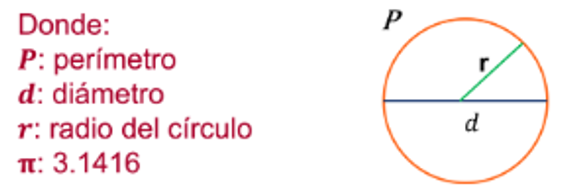

 <form>
  <ion-card>
    <ion-card-header>
      <ion-card-title>Circulo</ion-card-title>
      <ion-card-subtitle>Perimetro</ion-card-subtitle>
    </ion-card-header>
    <ion-card-content>
      El perímetro de un circulo es la longitud de la linea que forma su borde.
    </ion-card-content>
    
  </ion-card>
  <ion-input 
    [(ngModel)]="radioStr"
    name="radioStr"
    type="number" 
    label="Radio(cm)" 
    label-placement="floating" 
    fill="solid" 
    placeholder="ingresar valor"/>
  <ion-button (click)="calcularPerimetro()">CALCULAR EL PERIMETRO</ion-button>
  <br>
  <br>
  {{resultado}} 
         
</form>
   
 
  
